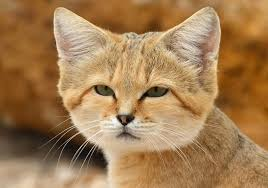
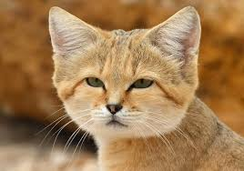

HTML
STRONA GŁÓWNANAUCZYCIELE
KOLORY
ZDJECIA
TABELA
TABELA NA OCENE
LISTA
LISTA NA OCENE
MAPY ODSYLACZY
FORMULARZE
FORMULARZE NA OCENE
OBRAZY&MULTIMEDIA
CSS
DOKUMENT
Lista grupy II w 2cWydatki grupy II w 2c
LINKI


 Następnie przerabia się je na proszek i przesiewa. Otrzymany ciemny,
Następnie przerabia się je na proszek i przesiewa. Otrzymany ciemny,
 aromatyczny proszek mieszany jest z cukrem i otrzymuje się czekoladę w proszku.
aromatyczny proszek mieszany jest z cukrem i otrzymuje się czekoladę w proszku. Czekolada pitna - ziarna kakaowca są poddawane fermentacji, suszone, a następnie oczyszczane i prażone.
Następnie miażdży się ich skorupki i odsiewa je oraz usuwa zarodki. Z pokruszonych ziaren wydobywa się tłuszcz
za pomocą wyciskania, wyżymania lub rozpuszczalnika. Pozostaje sucha substancja, tzw. makuchy.
Zostają one rozdrobnione i wysuszone w temperaturze 20 stopni Celcjusza.
Następnie przerabia się je na proszek i przesiewa. Otrzymany ciemny,
aromatyczny proszek mieszany jest z cukrem i otrzymuje się czekoladę w proszku.
Czekolada pitna - ziarna kakaowca są poddawane fermentacji, suszone, a następnie oczyszczane i prażone.
Następnie miażdży się ich skorupki i odsiewa je oraz usuwa zarodki. Z pokruszonych ziaren wydobywa się tłuszcz
za pomocą wyciskania, wyżymania lub rozpuszczalnika. Pozostaje sucha substancja, tzw. makuchy.
Zostają one rozdrobnione i wysuszone w temperaturze 20 stopni Celcjusza.
Następnie przerabia się je na proszek i przesiewa. Otrzymany ciemny,
aromatyczny proszek mieszany jest z cukrem i otrzymuje się czekoladę w proszku. Czekolada twarda - pokruszoną śrutę kakaową miele się w wysokiej temperaturze.
Powstaje masa zwana likierem czekoladowym. Miesza się ją i rozgniata, aż powstanie miałka i tłusta substancja,
puszysta, o aksamitnej gładkości. Poddawana jest ona konszowaniu - mieszaniu i rozcieraniu na sucho.
Dzięki temu staje się bardziej plastyczna, zmniejsza się jej wilgotność i znikają resztki kwasowości.
Pod koniec procesu konszowania dodaje się masło kakaowe i ewentualnie lecytynę.

Cały czas masa jest łagodnie podgrzewana do odpowiedniej temperatury (80-85 stopni dla czekolady gorzkiej,
55-60 stopni dla czekolady mlecznej). Następnie czekoladę się powoli schładza,
aby tłuszcz kakaowy jednolicie się skrystalizował. Odpowiednio schłodzona (ale płynna)
masa jest wlewana do form. W tunelu chłodniczym, w temperaturze około 6-7 stopni czekolada stygnie i krzepnie,
kurcząc się w formach. Ostatnim etapem produkcji jest wybicie tabliczek z form i zapakowanie.
Czekolada twarda - pokruszoną śrutę kakaową miele się w wysokiej temperaturze.
Powstaje masa zwana likierem czekoladowym. Miesza się ją i rozgniata, aż powstanie miałka i tłusta substancja,
puszysta, o aksamitnej gładkości. Poddawana jest ona konszowaniu - mieszaniu i rozcieraniu na sucho.
Dzięki temu staje się bardziej plastyczna, zmniejsza się jej wilgotność i znikają resztki kwasowości.
Pod koniec procesu konszowania dodaje się masło kakaowe i ewentualnie lecytynę.

Cały czas masa jest łagodnie podgrzewana do odpowiedniej temperatury (80-85 stopni dla czekolady gorzkiej,
55-60 stopni dla czekolady mlecznej). Następnie czekoladę się powoli schładza,
aby tłuszcz kakaowy jednolicie się skrystalizował. Odpowiednio schłodzona (ale płynna)
masa jest wlewana do form. W tunelu chłodniczym, w temperaturze około 6-7 stopni czekolada stygnie i krzepnie,
kurcząc się w formach. Ostatnim etapem produkcji jest wybicie tabliczek z form i zapakowanie.